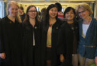
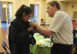
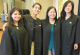
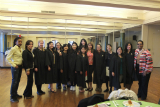
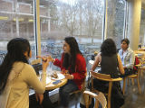
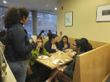
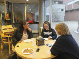
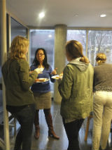
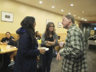

MEDIA
FGN Event Photos
Senior Dinner & Pinning Ceremony '14




Film Screening "First Generation"





Wellesley First Genners In the News
The Wellesley News - "First Generation Students Spark Class Conversations"
Class Action - "3 Things to Keep in Mind as a Non-First Gen or Low-Income Student Leader"
Wellesley Daily Shot 3/12/15
Wellesley 2015 First Gen Summit in Review
Wellesley Underground - "The Anger of a First Generation Student at Wellesley"
The Rivard Report - "First Generation Students Share Successes & Advice"
"I, Too, Am Wellesley" Photo Campaign
WAAM-SLAM II Transformative Justice and Education Bill for Wellesley College